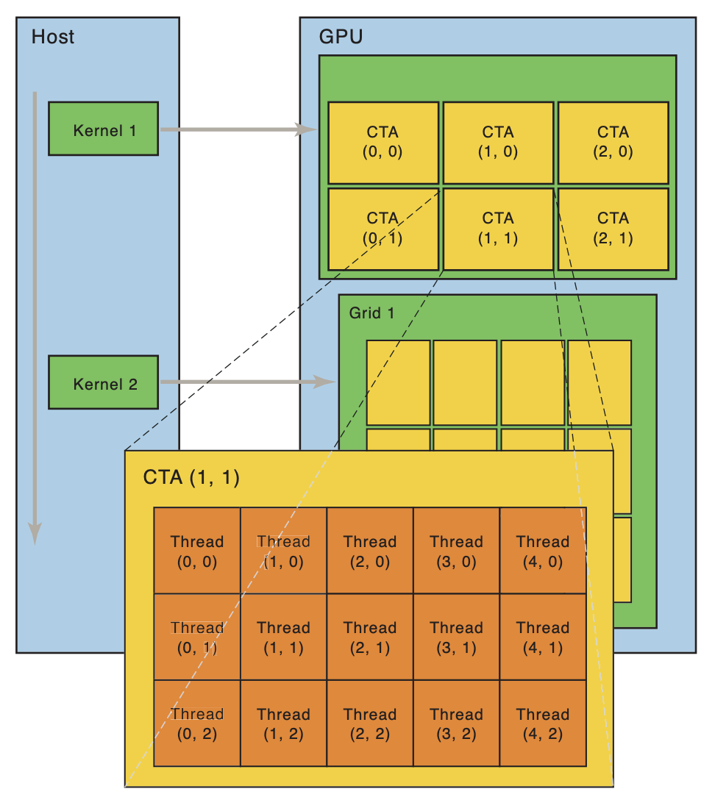
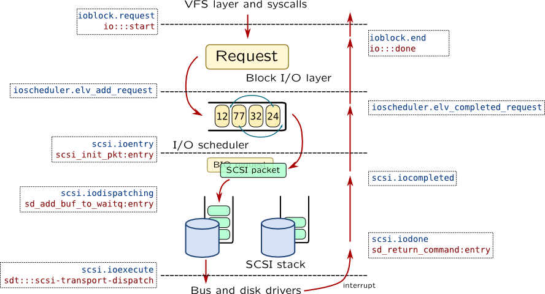

设备驱动程序
Overview

复习
- I/O 设备：一组寄存器和协议
- 串口/键盘/磁盘/打印机/总线/中断控制器/DMA/GPU
本次课回答的问题
- Q: 操作系统如何使应用程序能访问这些设备？
本次课主要内容
- 什么是设备驱动程序
- Linux 设备抽象
一、设备驱动程序原理
1、I/O 设备的抽象
I/O 设备的主要功能：输入和输出
- “能够读 (read) 写 (write) 的字节序列 (流或数组)”
- 常见的设备都满足这个模型
- 终端/串口 - 字节流
- 打印机 - 字节流 (例如 PostScript 文件)
- 硬盘 - 字节数组 (按块访问)
- GPU - 字节流 (控制) + 字节数组 (显存)
操作系统：设备 = 支持各类操作的对象 (文件)
- read - 从设备某个指定的位置读出数据
- write - 向设备某个指定位置写入数据
- ioctl - 读取/设置设备的状态
2、设备驱动程序
把系统调用 (read/write/ioctl/...) “翻译” 成与设备寄存器的交互
- 就是一段普通的内核代码
- 但可能会睡眠 (例如 P 信号量，等待中断中的 V 操作唤醒)
例子：/dev/ 中的对象
/dev/pts/[x]- pseudo terminal/dev/zero- “零” 设备/dev/null- “null” 设备/dev/random,/dev/urandom- 随机数生成器- 试一试：
head -c 512 [device] | xxd - 以及观察它们的 strace
- 能看到访问设备的系统调用
3、例子: Lab 2 设备驱动
设备模型
- 简化的假设
- 设备从系统启动时就存在且不会消失
- 支持读/写两种操作
- 在无数据或数据未就绪时会等待 (P 操作)
typedef struct devops {
int (*init)(device_t *dev);
int (*read) (device_t *dev, int offset, void *buf, int count);
int (*write)(device_t *dev, int offset, void *buf, int count);
} devops_t;
I/O 设备看起来是个 “黑盒子”
- 写错任何代码就 simply “not work”
- 设备驱动：Linux 内核中最多也是质量最低的代码
4、字节流/字节序列抽象的缺点
设备不仅仅是数据，还有控制
- 尤其是设备的附加功能和配置
- 所有额外功能全部依赖 ioctl
- “Arguments, returns, and semantics of ioctl() vary according to the device driver in question”
- 无比复杂的 “hidden specifications”
例子
- 打印机的打印质量/进纸/双面控制、卡纸、清洁、自动装订……
- 一台几十万的打印机可不是那么简单 😂
- 键盘的跑马灯、重复速度、宏编程……
- 磁盘的健康状况、缓存控制……
5、例子：终端
“字节流” 以内的功能
- ANSI Escape Code
- logisim.c 和 seven-seg.py
“字节流” 以外的功能
- stty -a
- 终端大小怎么知道？
- 终端大小变化又怎么知道？
- isatty (3), termios (3)
- 大部分都是 ioctl 实现的
- 这才是水面下的冰山的一角
二、Linux 设备驱动
1、Nuclear Launcher
我们希望实现一个最简单的 “软件定义核弹”
#include <fcntl.h>
#define SECRET "\x01\x14\x05\x14"
int main() {
int fd = open("/dev/nuke", O_WRONLY);
if (fd > 0) {
write(fd, SECRET, sizeof(SECRET) - 1);
close(fd);
} else {
perror("launcher");
}
}
2、实现 Nuclear Launcher
内核模块：一段可以被内核动态加载执行的代码
- M4 - crepl
- 也就是把文件内容搬运到内存
- 然后 export 一些符号 (地址)
launcher.c: 驱动程序模块
- Everything is a file
- 设备驱动就是实现了
struct file_operations的对象- 把文件操作翻译成设备控制协议
- 在内核中初始化、注册设备
- 系统调用直接以函数调用的方式执行驱动代码
3、更多的 File Operations
struct file_operations {
struct module *owner;
loff_t (*llseek) (struct file *, loff_t, int);
ssize_t (*read) (struct file *, char __user *, size_t, loff_t *);
ssize_t (*write) (struct file *, const char __user *, size_t, loff_t *);
int (*mmap) (struct file *, struct vm_area_struct *);
unsigned long mmap_supported_flags;
int (*open) (struct inode *, struct file *);
int (*release) (struct inode *, struct file *);
int (*flush) (struct file *, fl_owner_t id);
int (*fsync) (struct file *, loff_t, loff_t, int datasync);
int (*lock) (struct file *, int, struct file_lock *);
ssize_t (*sendpage) (struct file *, struct page *, int, size_t, loff_t *, int);
long (*unlocked_ioctl) (struct file *, unsigned int, unsigned long);
long (*compat_ioctl) (struct file *, unsigned int, unsigned long);
int (*flock) (struct file *, int, struct file_lock *);
...
4、为什么有两个 ioctl?
long (*unlocked_ioctl) (struct file *, unsigned int, unsigned long);
long (*compat_ioctl) (struct file *, unsigned int, unsigned long);
unlocked_ioctl: BKL (Big Kernel Lock) 时代的遗产- 单处理器时代只有
ioctl - 之后引入了 BKL,
ioctl执行时默认持有 BKL - (2.6.11) 高性能的驱动可以通过
unlocked_ioctl避免锁 - (2.6.36)
ioctl从struct file_operations中移除 compact_ioctl: 机器字长的兼容性- 32-bit 程序在 64-bit 系统上可以 ioctl
- 此时应用程序和操作系统对 ioctl 数据结构的解读可能不同 (tty)
- (调用此兼容模式)
三、为 GPU 编程
1、为 GPU 编程

Single Instruction, Multiple Thread
- 许多线程都执行相同指令
- 但每一个线程又有一些 thread-local data (例如编号)
- 非常精巧的设计
- 一个 PC，一堆数据
- VLIW 和 SIMD 的继任者
- 按照 “Warp, 线程束” 执行
- 分支怎么办？
2、Mandelbrot, Again
mandelbrot.cu 和 GPU 惊人的计算力
- 16 亿像素、每像素迭代 100 次
- 分到 512x512 = 262,144 线程计算
- 每个线程计算 mandelbrot 的一小部分
- mandelbrot-12800.webp
- (感谢 doowzs 借用的机器)
{kind=link}
nvprof 结果
==2994086== Profiling result:
Time(%) Time Name
95.75% 1.76911s mandelbrot_kernel
4.25% 78.506ms [CUDA memcpy DtoH] (12800 x 12800 data)
0.00% 1.5360us [CUDA memcpy HtoD]
RTFM: Parallel Thread Execution ISA Application Guide
- 就是个指令集
- 再编译成 SASS (机器码)
- cuobjdump --dump-ptx / --dump-sass
该有的工具都有
- gcc → nvcc
- binutils → cuobjdump
- gdb → cuda-gdb
- 可以直接调试 GPU 上的代码！
- perf → nvprof
- ...
3、GPU 驱动程序
GPU 驱动非常复杂
- 全套的工具链
- Just-in-time 程序编译
- Profiler
- ...
- API 的实现
- cudaMemcpy, cudaMalloc, ...
- Kernel 的执行
- 大部分通过 ioctl 实现
- 设备的适配
NVIDIA 在 2022 年开源了驱动！(名场面)
四、存储设备的抽象
1、存储设备的抽象
磁盘 (存储设备) 的访问特性
- 以数据块 (block) 为单位访问
- 传输有 “最小单元”，不支持任意随机访问
- 最佳的传输模式与设备相关 (HDD v.s. SSD)
- 大吞吐量
- 使用 DMA 传送数据
- 应用程序不直接访问
- 访问者通常是文件系统 (维护磁盘上的数据结构)
- 大量并发的访问 (操作系统中的进程都要访问文件系统)
对比一下终端和 GPU，的确是很不一样的设备
- 终端：小数据量、直接流式传输
- GPU：大数据量、DMA 传输
2、Linux Block I/O Layer
文件系统和磁盘设备之间的接口
- 包含 “I/O 调度器”
- 曾经的 “电梯” 调度器

3、块设备：持久数据的可靠性
Many storage devices, ... come with volatile write back caches
- the devices signal I/O completion to the operating system before data actually has hit the non-volatile storage
- this behavior obviously speeds up various workloads, but ... data integrity...
我们当然可以提供一个 ioctl
- 但 block layer 提供了更方便的机制
- 在 block I/O 提交时
| REQ_PREFLUSH之前的数据落盘后才开始| REQ_FUA(force unit access)，数据落盘后才返回
- 设备驱动程序会把这些 flags 翻译成磁盘 (SSD) 的控制指令
- 在 block I/O 提交时
4、Block I/O: 持久化的起点
文件系统
- 在 Block I/O API 上构建的持久数据结构
实现文件系统
- bread
- bwrite
- bflush
- 支持文件/目录操作
- 你可能已经想到应该怎么做了！
总结
本次课回答的问题
- Q: 操作系统如何使应用程序能访问 I/O 设备？
Takeaway messages
- 设备驱动
- 把 read/write/ioctl 翻译成设备听得懂的协议
- 字符设备 (串口、GPU) + DMA
- 块设备 (磁盘)